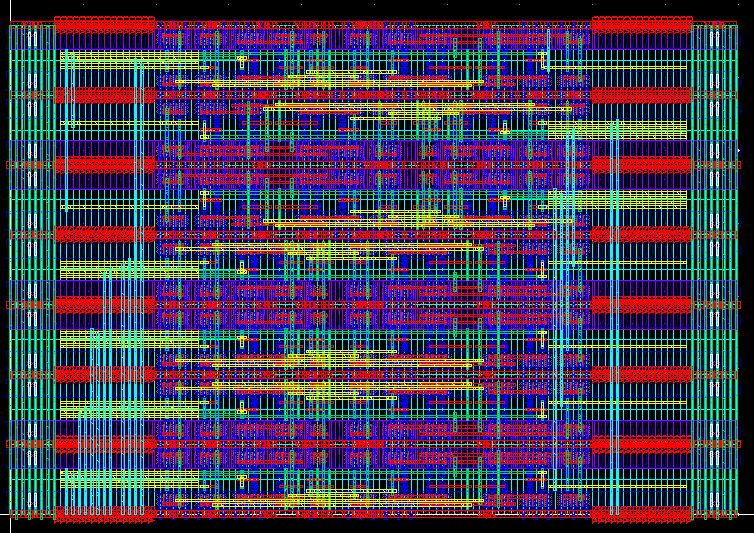
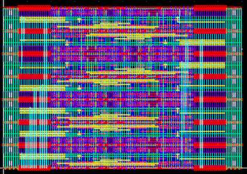

CMOS SERDES generator¶
serdes
(This generator example is not maintained anymore. Please refer to Woorham`s example for the latest codes)
This section describes how to generate CMOS serdes building block layout templates.
Install and launch¶
Set up BAG environment for the technology in use. This is usually done by cloning technology repo provided by BAG developers. For example, cds_ff_mpt environment can be set up by running following commands.
$ git clone git@github.com:ucb-art/BAG2_cds_ff_mpt.git $ cd BAG2_cds_ff_mpt $ git submodule init $ git submodule update $ git submodule foreach git pull origin master
Set setting up files, run virtuoso and BAG.
Create an empty library called (tech)_logic_templates. For example, for cds_ff_mpt technology, the library name will be cds_ff_mpt_logic_template.
Run this command to generate logic layouts.
run laygo/generators/logic/logic_templates_layout_generator.py
Open (tech)_logic_templates library and check if cells are generated.
 logic_lib
logic_libRun this command to generate a serializer layout.
run laygo/generators/serdes/serdes_layout_generator.py
Parameterizations¶
In laygo/generators/serdes/serdes_layout_generator.py, there are 2 parameters for serializer, ser_m(serializer gate sizing) and ser_num_bits. Users can try different numbers and regenerate the layout.
The figure shown below is for ser_m=4, ser_num_bits=8.
serdes
The figure shown below is for ser_m=2, ser_num_bits=16. You can see the number of rows is increased due to the the increased serialization ratio.
 serdes16
serdes16